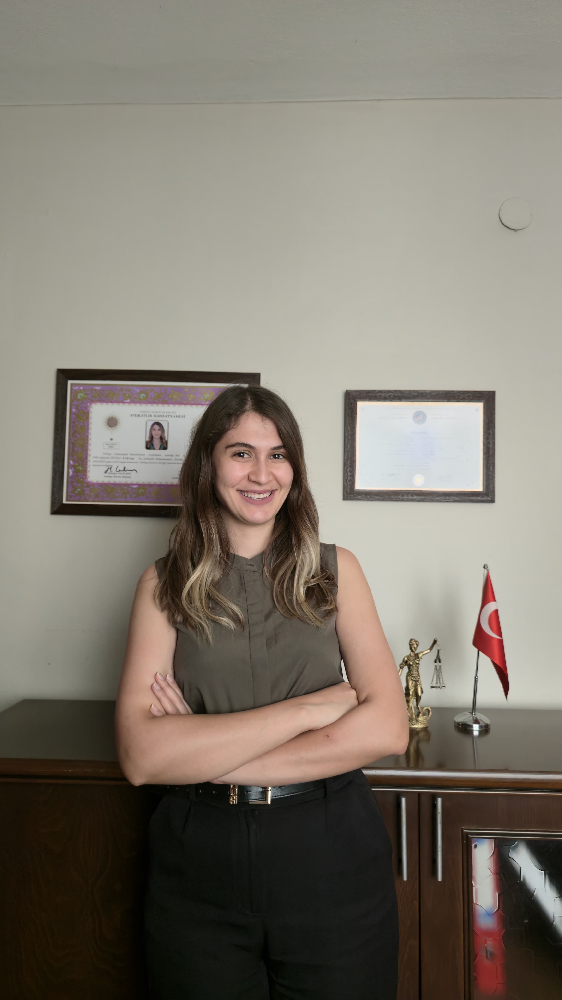

Hakkımızda
Antalya Muratpaşa merkezli hukuk büromuz; hukuki süreçlerde şeffaflık, mesleki özen ve güven ilkeleri doğrultusunda müvekkillerine avukatlık ve danışmanlık hizmeti sunmaktadır.

Av. Anıl GÜZEL
Av. Anıl Güzel, 2021 yılından beri Güzel Hukuk Bürosu bünyesinde mesleğini sürdürmektedir. Özel hukuk ve ceza hukuku alanlarında danışmanlık ve dava takibi yapmaktadır. Antalya Adliyesi'nde görülen davalarda müvekkilerini temsil etmektedir.

Av. Duygu KARA GÜZEL
Av. Duygu Kara Güzel, 2021 yılından beri Güzel Hukuk Bürosu bünyesinde mesleğini sürdürmektedir. Aile hukuku ve iş hukuku alanlarında danışmanlık ve dava takibi yapmaktadır. Antalya Adliyesi'nde görülen davalarda müvekkillerini temsil etmektedir.
Çalışma Alanları
Güzel Hukuk Bürosu, özel hukuk ve ceza hukuku üzerine yoğunlaşmakta olup 11 hukuk alanında danışmanlık ve takip hizmeti vermektedir.
- Ceza Hukuku: Soruşturma ve kovuşturma aşamasında savunma, ağır ceza ve asliye ceza dosyaları
- Gayrimenkul ve Kira Hukuku: Tapu iptali ve tescil, ortaklığın giderilemsi, kira tespiti ve tahliye, haksız işgal
- İş Hukuku: Kıdem ve ihbar tazminatı, işe iade, hizmet tespit, fazla çalışma alacağı, mobbing
- İcra ve İflas Hukuku: İcra takibi, kambiyo senetleri, haciz ve muhafaza; çek ve senet takibi
- Veraset ve Miras Hukuku: Veraset ilamı, mirasın reddi, vasiyetnamenin iptali, terekenin tespiti ve taksimi
- Aile Hukuku: Anlaşmalı ve çekişmeli boşanma, maddi ve manevi tazminat, velayet ve nafaka düzenlemeleri, mal rejimi tasfiyesi
- İdare Hukuku: İptal ve tam yargı davaları, kamulaştırma, imar ve belediye işlemleri,
- Yabancılar Hukuku: Oturum ve çalışma izni, Türk vatandaşlığı başvurus, taşınmaz edinimi
- Sözleşme Hukuku: Ticari sözleşmelerin hazırlanması, sözleşmelerin incelenmesi ve revizyonu, protokol ve ihtarname süreçleri
- Ticaret Hukuku: Ticari alacak takibi, haksız rekabet davaları, çek ve bono uyuşmazlıkları
- Şirketler Hukuku: Şirket kuruluşu, ortaklık uyuşmazlıkları, tasfiye ve tür değişikliği
Randevu ve İlk Görüşme
Görüşmeler randevuyla yapılır. Randevu almak için (535) 712 25 26 numaralı telefondan, WhatsApp üzerinden veya İletişim sayfamız üzerinden bize ulaşabilirsiniz. Görüşmeye gelirken uyuşmazlığa ilişkin belgelerin getirilmesi süreci hızlandırır: sözleşmeler, tapu kayıtları, ihtarnameler, tebligatlar, banka dekontları, yazışmalar ve varsa mevcut dava dosyasının bilgileri.
Avukatlık ücretleri, Türkiye Barolar Birliği tarafından her yıl yayımlanan Avukatlık Asgari Ücret Tarifesi esas alınarak belirlenir ve yazılı ücret sözleşmesi düzenlenir. Ücret; işin türüne, kapsamına ve tahmini süresine göre değişir.
Bilgilendirme
Bu sitede yer alan açıklamalar, genel bilgilendirme amaçlıdır. Kesin hukuki görüş yerine geçmez. Her uyuşmazlık kendi bağlamında değerlendirmelidir. Ayrıntılı bilgi için İletişim sayfasından büromuza ulaşabilirsiniz.